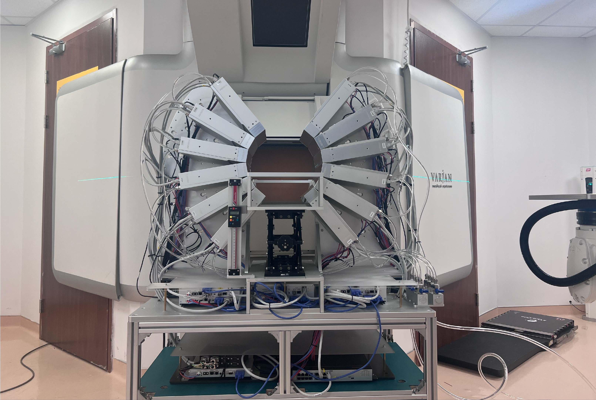
能“看见”质子束的数字PET装置来了！
数字PET团队自主创新的数字PET 2.0系统取得重要突破！
近日，由国家重大科研仪器研制项目支持研发的质子束在生物组织内的能量输运观测装置（以下简称“装置”）研制成功。该装置先后在合肥离子医学中心和武汉协和医院质子医学中心完成安装，历经四年设备研制与临床前测试，成功实现质子束诱发正电子核素三维动态分布及质子束程的亚毫米级在线监测，有望更清晰地“看见”质子束照射的宽度与深度，从而助力肿瘤质子治疗更加精准。
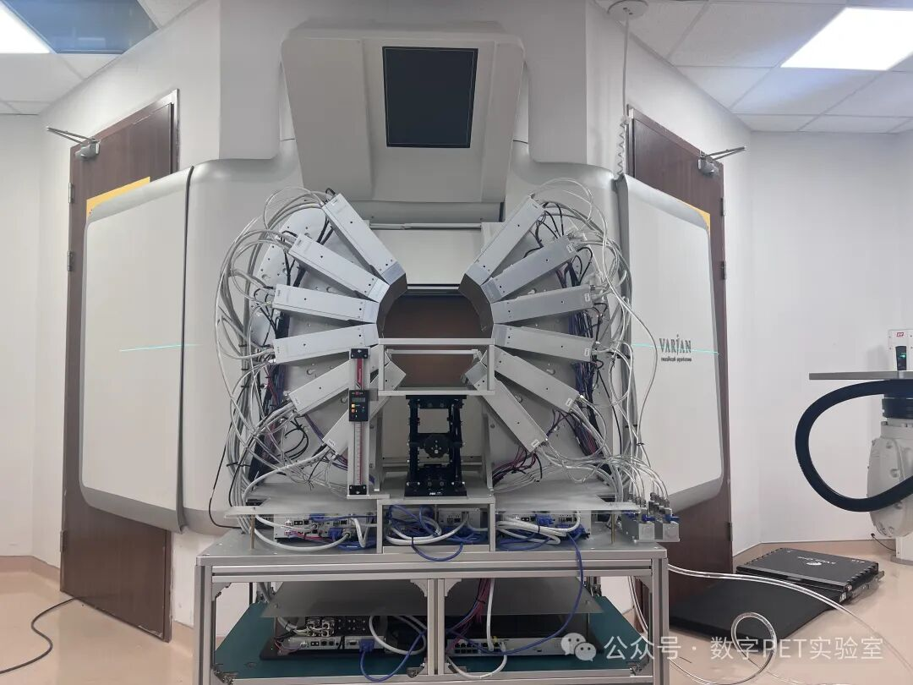
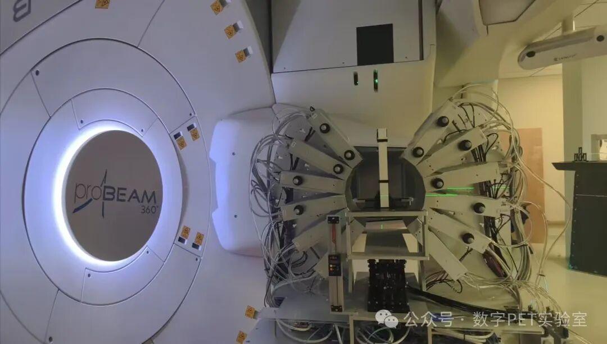
研制成功的质子束观测装置主要由质子束诱发次级粒子探测系统和数据处理工作站两部分组成。
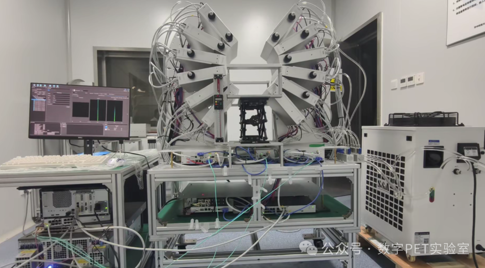
数字PETer、华中科技大学数字PET实验室博士生马秋慧介绍，该装置最突出的技术特点是高计数率。
依托多电压阈值（MVT）方法在信号源数字化方面的优势，装置最大计数率超过48 Mcps，能够更充分地捕获质子束诱发的正电子湮灭伽马信号。捕获这些信号，相当于追踪质子束在组织中的运动轨迹，为质子治疗束中在线监测提供了必要条件。
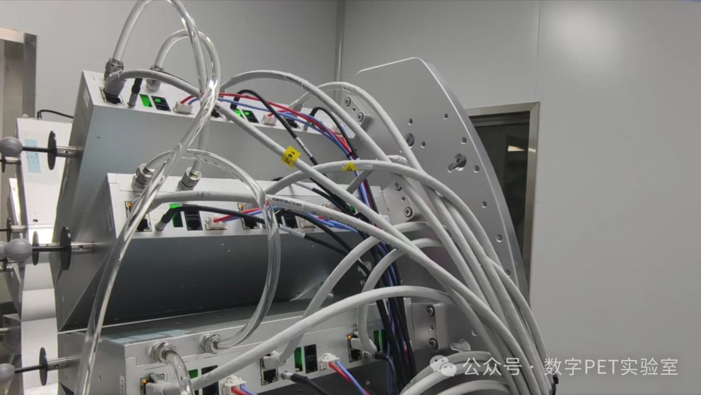
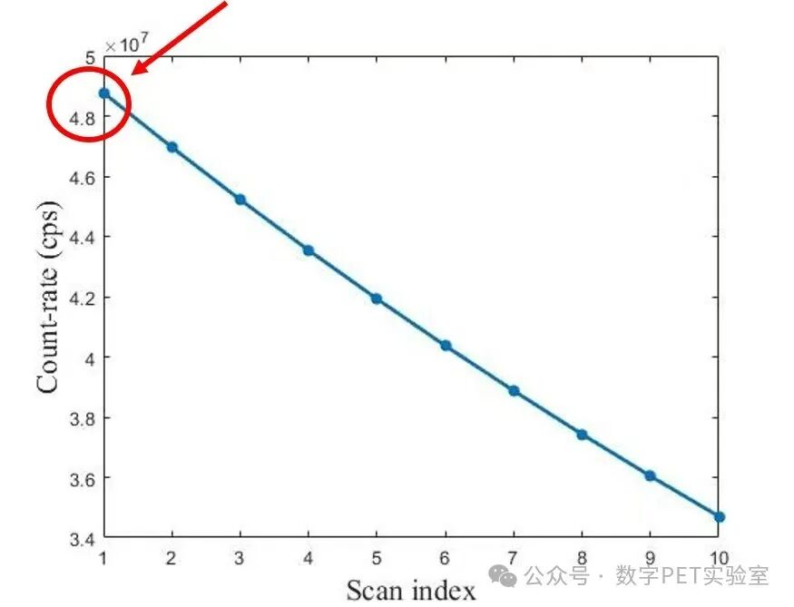
2018年，数字PET团队研制出全球首台用于质子治疗监测的双平板全数字PET系统。此次研制的质子束观测装置于2020年1月启动研发，历经四年多，于2024年12月初步完成。
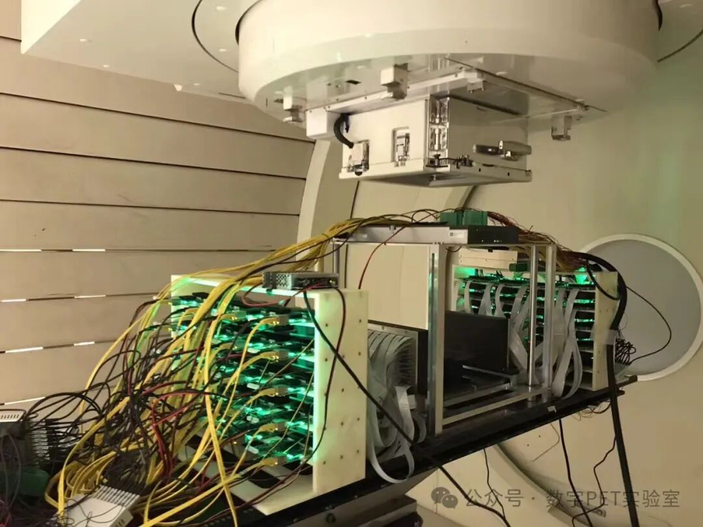
与第一代原型机相比，新装置实现了全面升级与创新。在硬件方面，探测系统有效探测面积扩大至原来的3.5倍，获得了更高的计数率、更高的灵敏度以及更好的时空分辨率。
在软件方面，针对质子治疗监测信号快速处理的需求，万琳教授的软件团队升级了Plug-n-Image软件平台，实现基于GPU的脉冲重建、事件符合和图像重建功能，完成从数据采集到重建图像的“一键成像”。
自2020年承担项目任务以来，数字PET研究人员得到武汉、合肥相关单位的大力支持。武汉协和医院质子医学中心和合肥离子医学中心投入大量资源，协调宝贵的实验场地与条件。数字PET团队先后与协和医院质子医学中心张盛医生团队、杨志勇物理师团队，以及合肥离子医学中心袁双虎医生团队、卢晓明物理师团队，就质子束监测实验开展多次研讨，并共同制定所需治疗计划。
目前，该装置已完成一系列设备调试和临床前测试，开展了质子束照射水模、PMMA模体、头模、猪肉及动物等实验。
这些实验成功实现了质子束诱发正电子核素三维动态分布及质子束程的亚毫米级在线监测，同时探索了质子治疗过程中的葡萄糖代谢变化，并分析了生物体内质子束生物冲刷效应。相关技术突破有望在质子放疗的剂量引导、生物引导、疗效评价及设备质量控制等方面发挥重要作用。
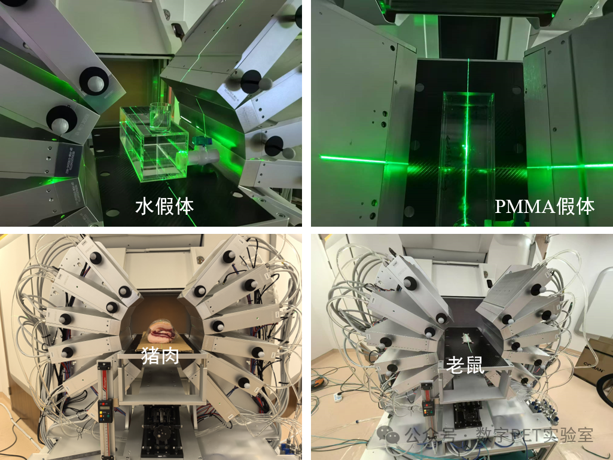
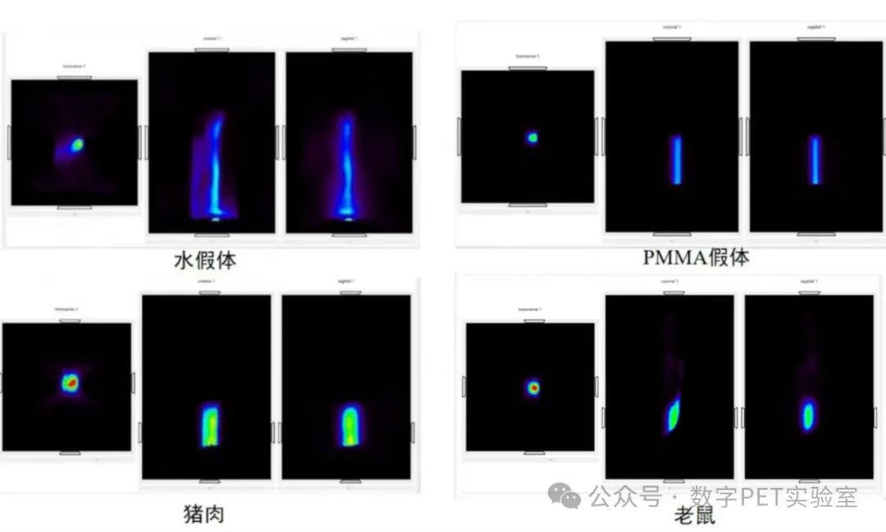
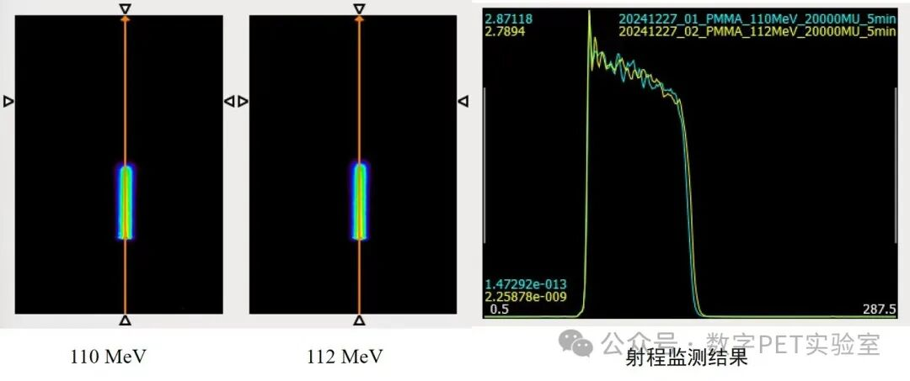
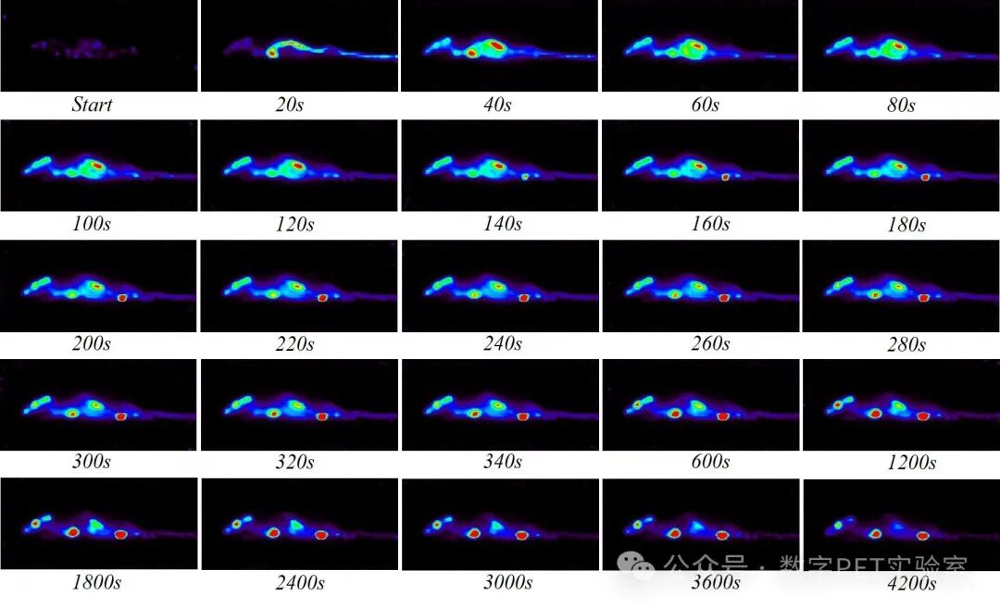
质子治疗被誉为肿瘤治疗的“利器”，代表着国际先进的肿瘤治疗技术。据相关统计，自1954年质子治疗首次用于临床以来，截至2021年底，全球接受质子治疗的患者已达28万人，占全部粒子治疗患者的86.2%；预计到2025年底，这一数字将增至35万人，显示出质子治疗技术正在快速普及并获得越来越广泛的临床认可。